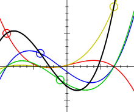

Lagrange插值
插值问题：已知函数\(y=f(x)\)在区间[a, b]上n+1个互异点（术语为“插值节点”）\(a \le x_0 < x_1 < \cdots < x_n \le b\)的函数值\(f(x_i)\)，若存在一个简单函数\(y=y(x)\)经过这n+1个点，即\(y(x_i)=y_i=f(x_i)\)，称\(y=y(x)\)为\(f(x)\)在这些节点处的插值函数。实际上就是，我们通过实验、测量等手段得到n+1个数据对\((x_i, y_i), i=0,1, \ldots, n\)，需要推测其他点的函数值 ，也即估计函数\(y=y(x)\)。
利用插值函数y(x)，我们可以进一步近似计算f(x)的函数值、导数等。插值函数的形式可以是多项式、三角函数、指数函数、样条函数等等，一般要求光滑简单。最常用的是多项式插值或者分段多项式插值，可能的原因是：（1）多项式函数简单光滑、可微可积；（2）Weierstrass定理指出，任意连续函数可用多项式作任意精度的逼近。对于插值方法，我目前只关注多项式插值或者分段插值。
唯一性：对于n+1个互异节点，显然只要多项式次数不超过n就能保证插值函数唯一。这条数学定理很容易证明，直观地我们知道对于线性方程组，n+1个数据点正好够（存在且唯一）求解n+1个未知数（系数行列式为Vandermonde行列式）。也就是说，我们应该限制插值多项式次数的上限为n。
Lagrange插值理论
既然我们有n+1元线性方程组，能否直接求解呢？一般来说，计算量比较大（感兴趣可参见其他介绍线性方程组算法的教材）。Lagrange插值方法的思路是这样的，对于n+1元线性方程，对应着次数不超过n的多项式空间（常数+n个系数共n+1个未知数），我们能否构造出一组基函数\(\ell_i(x), i=0,1,\cdots,n\)，使得插值多项式(此处\(y_n(x)\)常记为\(L_n(x)\))
特别地，在两个数据对\((x_0,y_0), (x_1,y_1)\)时，Lagrange插值为线性插值（一次）；三个数据对时，为抛物线插值（二次）。我们可以直接带入上面公式得到Lagrange插值基函数，但是这里我想演示一下Lagrange插值算法的直观过程。以线性插值为例，有数据\((x_0,f(x_0)), (x_1,f(x_1))\)，解方程组
我只是比较好奇插值基函数到底是啥样？从定义来看，\(\ell_i(x)\)都是n次齐次的，\(f(x_i)\ell_i(x)\)各穿过一个数据点，在其他\(x_j\)处取零值。四个数据对(n=3)时，\(L_3(x)\)与4个基本多项式的情况如下图（来自Wikipedia）

例子：已知\(\sqrt{4}=2, \sqrt{9}=3, \sqrt{16}=4\)，求\(\sqrt{11}\)。
我们关心的一个问题是，Lagrange插值的精度如何，也即Lagrange插值余项\(R_n(x)=f(x)-L_n(x)\)。结论是
如果\(f^{(n+1)}(x)\)在插值区间有上界\(M_{n+1}\)，我们就可以估计截断误差。
Lagrange插值多项式的优点是形式对称，易于编程，大多数情况下余项会随着插值节点个数增加（增大n）而减小（后面研究特例：Runge现象）。缺点是在增加插值节点时，已计算过的插值基函数不能重复利用，需要全部重新计算，比较浪费。解决方法如逐步线性插值方法（Aitken和Neville插值）和Newton插值法。
Python编程实现
显然，用Python编写Lagrange插值算法只需二重循环即可：
from functools import reduce
import operator
def lagrange(x_val, y_val, x):
"""
Polynomial Interpolation: Lagrange's Method
"""
def basis(i):
l_i = [(x - x_val[j])/(x_val[i] - x_val[j]) for j in range(len(x_val)) if j != i]
return reduce(operator.mul, l_i)*y_val[i]
assert len(x_val) != 0 and (len(x_val) == len(y_val))
return sum(basis(i) for i in range(len(x_val)))
# example:
x = [4, 9, 16]
y = [2, 3, 4]
print(lagrange(x, y, 11))
#3.33333...
这里也演示了上面那个例子，可以根据公式直接手算来验证程序的正确性。Python代码放在我的Github中lagrange.py供下载。